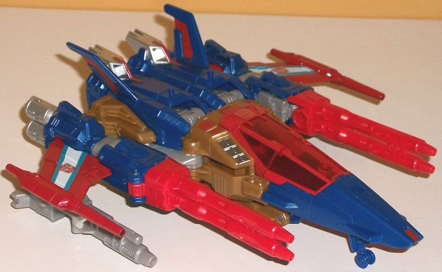

Size : Titan Master
Difficulty of Transformation : Very Easy
Color Scheme : Black, off-white, and some lavender, blue, silver, dark metallic green, dark red, and pale metallic gold
Individual Rating : 4.5
Set Price : $100 U.S.
(NOTE: Because this set is mostly composed
of repaints, this is not a full-blown review. This mainly covers any changes
made to the set and the color scheme, and merely compares it to the original
versions of these molds. For a review on Titans Return Triggerhappy w/
Blowpipe-- the mold used for Metalhawk w/ Professor Go-- go
here
.
For a review on Titans Return Broadside w/ Blunderbuss-- the mold used
for Tidal Wave w/ Fathom-- go
here
. For
a review on Powermaster Optimus Prime w/ Apex-- the mold used for Magnus
Prime w/ Ginrai-- go
here
.)
 Thunderwing
(Titan Master)
Thunderwing
(Titan Master)
Size
: Titan Master
Difficulty of Transformation
: Very
Easy
Color Scheme
: Black, off-white,
and some lavender, blue, silver, dark metallic green, dark red, and pale
metallic gold
Individual Rating
: 4.5
The Titan Master of Thunderwing here is a bit of a mix-'n'-match of molds. For most of the "base", it's a redeco of Titan Master Fangry , with the same arms, Titan Master head, and legs. However, the body-- which is diecast, along with the new headsculpt in head mode-- is taken from Titan Master Rodimus Prime , from the other $100 Titans Return giftset. Thus, in Titan Master mode Thunderwing has a ridge down the center of his chest with little black details on the sides, while he has the straightforward arms, spring-like details on the legs, a unique head with side antennae, and a knight-like faceplate, all taken from Fangry. (Unfortunately, in Titan Master mode this means the toy really doesn't look like Thunderwing.) The color breakup is rather interesting, being black on the bottom, an off-white on the body, some lavender on the arms, and some blue on the head w/ a silver faceplate; the color variation and paint apps on a Titan Master's robot mode is quite impressive, and overall it's a pretty good color scheme overall-- all of the colors go together quite well, with the black and blue contrasting nicely while the lavender and white complement each other. As for the head mode, obviously this has been redone to be Thunderwing's facesculpt. This sculpt is based heavily off of Thunderwing's IDW head, with a really evil-looking, fanged mouth, a roundish head with side antennae and a small center forehead crest, a band across the forehead, and regular eyes. The detailing is quite solid and comic-accurate, and the amount of colors on a Titan Master is, again, impressive-- the "base" part of the diecast head is off-white paint, while the face is metallic gold, the eyes are dark red, the band across the forehead is black, and there's a little metallic dark green "jewel" painted in the center of the forehead. Even from a side view, the lavender "antennae" looks nice and the back end of the head is de-emphasized, what with the black coloration. All in all Thunderwing is quite well-done-- keeping in mind the inherent limiations of a Titan Master toy, of course.
 Decepticon
Pounce
Decepticon
Pounce
Allegiance
: Decepticon
Size
: Legends
Difficulty of Transformation
: Easy
Color Scheme
: White, very dark purplish
blue, moderately light teal, and some fuchsia, yellow, and orange
Individual Rating
: 7.4 (original);
7.5 (Earthrise version)*
The whole point of the
clones is that their robot modes look the same, but that their alternate
modes are different. Since Pounce is one of the Decepticon clones-- and
the only wholly new mold in this set-- I'll cover the robot mode first,
since it's obvious that this is where the design emphasis was, with the
alt mode a secondary concern (and many of my comments on the alt mode revolve
around robot mode comments). The core of this robot mode is quite well-done
and pretty darned proportional. He's got fairly curved arms, but rather
blocky legs, and a flat angular chest with a raised section up the center
of it, complete with an allegiance symbol on the crotch of all places,
and a jaguar symbol (indicating his alt mode, of course) on the center
of his chest. His head is molded to look like he's wearing a round helmet,
but with a vent down the center of the forehead and a small bar above his
face. The mold details all over Pounce are adequate, but they're rather
generic, with nothing in particular sticking out (or particularly intricate).
There are some kibble bits behind his main body-- pretty obvious ones,
too. It's nearly all of his alt mode bits, really-- his jaguar head is
folded down behind his head and out of the way, but the jaguar front legs
are folded behind the back as well and stick out from the sides of the
body quite obviously. The top of the rear section of the jaguar mode and
the tail is also just sticking straight out behind his pelvis-- it looks
pretty odd, but if you fold it down even a little it's then obvious behind
his upper legs from even a frontal view. I really wish they had gotten
these pieces to compact together better. As for the color scheme, it's
fairly typical of late '80s Decepticons-- he's got quite a lot of white
and very dark purplish blue. They contrast against each other quite well,
though I wish the purplish blue was just a titch lighter to provide a bit
more color. The chest is a nice shade of teal, and complements the blue
quite well while also being another light color that goes alright with
the white to boot. For paint, there's some white on the lower legs and
some yellow on the vent-like details on said lower legs, as well as a nice
shade of orange on the robot eyes. His fists are also painted dark purplish
blue, and there's some white paint on the pelvis. Overall there could be
a bit more color variety, but it's still a decent, solid color scheme overall.
For articulation, Pounce is great; he can move at the neck, shoulders,
elbows, hips (at two points), and knees. He's fairly well-balanced, and
most of these joints are ball joints, so he's quite poseable.
Pounce's transformation
is fairly straightforward. Flip up the beast head and flip down the beast
lower back and tail; rotate forward the shoulders and then rotate down
the front legs; and then rotate out the bottom rear beast feet and then
rotate around the robot legs and position them appropriately to make the
rear beast legs. (The pelvis also breaks apart into two halves, but this
is used for Wingspan; it's not used in Pounce's transformation.) This mode
would be prety good, except for VERY obvious robot arms right under the
stomach/chest area. I mean, they stick out quite a bit, don't peg in anywhere,
and kind of ruin the otherwise streamlined look of the mode. On a much
more minor note, the robot feet are a bit obvious on the back of the beast
rear feet, but they're pretty small and not that big of a deal. Pounce
does have some proportional issues in this mode, as his front paws-- though
they have some interesting piston-like details-- are a bit too skinny and
2-D, not looking nearly bulky enough from a frontal view, in particular.
The rear legs are more beefy, but they're too obviously the robot legs
bent at the knees. The little paws that come down from beneath the feet
look pretty nice, though. The tail is also too short, but this is pretty
common for animal TFs that don't have their tails turn into weapons, to
be honest. The main body looks fairly good, though, and the headsculpt
is fantastic-- it's quite angular, with pointy whiskers, ears, and the
like molded in. Unfortunately he can't open his mouth, but otherwise it's
fine-- the orange paint apps on the eyes are really nice. There's some
fuchsia on the rear portion of the body, but otherwise all the paint apps
in this mode carry over from the robot mode-- there's some pretty broad
areas of dark purplish-blue that are unpainted in this mode, so he doesn't
look quite as good overall in that respect. For articulation in this mode,
Pounce can move at the shoulders, elbows, hips (at three points), knees,
and at the base of the tail. Thus he's fairly articulated, though if you
mess with the rear legs too much you can ruin the illusion that the upper
robot legs form the rear portion of the jaguar body.
*Pounce was also released in a 2-pack with Wingspan as a Target Exclusive Earthrise release for $25 U.S. The two toys are mostly the same, with some minor color differences. The most obvious changes for the Earthrise version are the purple limbs in beast mode, though there are some other very minor changes. Namely, the lack of fuchsia on the beast lower body; the lack of white on the robot lower legs; red eyes in both modes; a silver-painted face in robot mode; and a bit more visible teal. Overall I think the Target Exclusive release is SLIGHTLY better in terms of the color scheme, but they're both so similar I can't really recommend one substantially over the other.
 Metalhawk
w/ Professor Go
Metalhawk
w/ Professor Go
Allegiance
: Autobot
Size
: Deluxe
Difficulty of Transformation
: Medium
Color Scheme
: Dark semi-metallic
blue, brownish gold, light milky gray, and some transparent cherry red,
silver, white, teal, moderately dull red, and dull metallic gold
Individual Rating
: 9.7

Professor Go was a character
in the Japanese "Super God-Masterforce" TF cartoon that was fairly associated
with Metalhawk, so now he's Metalhawk's headmaster! (In case you're wondering
where the name comes from, it's not on the packaging-- a list of all the
Titan Masters in Titans Return was released on a special extra little "cereal
box" during SDCC 2017, and Transfans were able to match up the new names
with the toys that had Titan Masters that hadn't specifically been named
yet.) Because Metalhawk's a redeco of Triggerhappy, Professor Go is a redeco
of Triggerhappy's Titan Master Blowpipe-- and in robot mode, the two Titan
Masters look nearly identical. The head, arms, and legs are still blue,
the main body and upper legs are still gray. The mold details and complete
lack of paint are also the same here as on Blowpipe. However, the dark
blue is a semi-metallic, less periwinkle shade on Professor Go when compared
to Blowpipe, and the light milky gray is less brown-ish, so Professor Go
does look ever-so-SLIGHTLY better. If it wasn't for the head on the back
of the robot mode, though, it'd be easy to mix up the two toys-- VERY easy.
In head mode is Professor Go's only mold change-- the face has been changed,
of course, to match Metalhawk's. Metalhawk has a fairly normal face and
eyes, with the face painted silver and some fairly light blue paint used
on the eyes. The rest of the facesculpt is rather round, with several armor-like
details on the forehead and little circles around where the ears would
be. There's also a really nice metallic dull gold paint on the rest of
the helmet. The blue Titan Master arms behind the head work nicely as Metalhawk's
antennae, though compared to the G1 toy they're the wrong color (they should
be the same color as the rest of the face)-- thus from the side, the color
mis-match is a bit distracting.
The main toy of Metalhawk
is a redeco of Triggerhappy. The overall curved, futuristic look calls
back to his IDW design (and his original toy's inner robot) more than his
more blocky, modern-esque G1 toy, though I like this updated "futuristic
fighter" look more for him. His main colors are dark semi-metallic blue--
as mentioned before, a great shade-- and a brownish gold plastic, the latter
of which is mostly used for the core body of the robot mode. It's the standard
plastic color that takes the place of gold paint-- it honestly looks a
titch more brown than gold, but it's still a decent color and as of this
review (9/2020), there's no sign of Gold Plastic Syndrome where it breaks
down or anything. There's also a lot of red on Metalhawk-- there's the
red plastic on the main guns, but most of his other red is a noticeably
duller paint shade on the main wings, bits on the tailfins and lower legs,
and around the cockpit and chest and nosecone. I think the plastic looks
better, but the red still contrasts pretty well against both the blue (it
honestly makes him look a little "patriotic") and the gold/brown. The cockpit
is a very nice transparent cherry red plastic as well, which looks VERY
nice. Light milky gray is used for several more "minor" pieces, such as
the handheld guns, the feet, the upper legs, and some connector parts on
the shoulders and arms. It's bland, but it's not really used on large pieces
and is mostly surrounded by more interesting colors, so it's not that big
of a deal. To complement the gray, there's some silver paint on the kneecaps,
exhaust pipe/shoulders, and part of the chest-- nearly always a nice color
on TFs, and Metalhawk is no exception. Finally, there's some small white
stripes on the wings, bordered by really spiffy teal stripes. Again, they're
small, but they're a nice addition to said wings.
Beyond the face, no
mold changes have been made to Metalhawk.
 Tidal
Wave w/ Fathom
Tidal
Wave w/ Fathom
Allegiance
: Decepticon
Size
: Voyager
Difficulty of Transformation to Carrier
:
Easy
Difficulty of Transformation to Jet
:
Easy
Color Scheme
: Dark purple, light
milky gray, moderately dark gray, transparent orange, and some dark metallic
bluish gray, black, dark red, light orange, and pale semi-metallic off-white
Individual Rating
: 7.6
Given that this is a
redeco of Broadside, the Titan Master Fathom is a redeco of Blunderbuss.
In Fathom's robot mode, all of the mold detailing from Blunderbuss is there,
and it's obvious that not much emphasis was put on this little toy-- in
this mode, Fathom's all either a blah light milky gray, a fairly dark moderate
gray for the body, or some dark purple on his upper legs. So beyond that
purple, the robot mode is entirely gray and extremely bland-looking, with
no paint at all. For head mode, the facesculpt has, of course, been changed
to match Tidal Wave's face. It's a pretty good, accurate sculpt, with a
head that starts fairly wide at the bottom with the side "helmet" around
the face that slowly tapers up to the top, where there's a bit sticking
out of Tidal Wave's forehead with three little circles on the front. The
features of the head aren't as pronounced as on the original Armada toy,
given the size restrictions of the face and gimmick, but it's still easily
recognizable as Tidal Wave. He's got dark red eyes and a dark metallic
bluish gray paint on the face, with a large chin/lip piece that's purple
like the rest of the front of the head. The headsculpt is missing the side
rectangular launcher-like details, but the full toy takes care of that.
The rest of the head beyond the front isn't purple but rather light milky
gray, but given how the original Tidal Wave toy looked, having gray on
the head doesn't look that far off from the original.
As for the full toy,
although Tidal Wave is obviously an homage to
Armada
Tidal Wave
, interestingly enough he doesn't take the color scheme from
the American Armada toy, but rather the TakaraTOMY/show color scheme. Personally,
I like this change-- the deep purple plastic is a REALLY good color, and
looks especially great against the transparent orange pieces on the wings,
faux chest cockpit, real jet cockpit, and gun. Purple and orange always
look awesome together, but this vibrant of an orange against this dark
a shade of purple is just fantastic. There's also a bit of light orange
paint on the toy-- namely, on the robot knees and on pieces that form the
front of the carrier mode. Unfortunately, much of the rest of Tidal Wave's
color scheme is gray-- either a moderately dark gray (not too bad, but
boring), and a light milky gray plastic (VERY bland and boring). They don't
really contrast or complement each other enough, they're just dull. They
do, of course, provide some contrast against the deep purple, and admittedly
they are appropriate for an aircraft carrier and jet, but still, I do not
like those parts. There are a few gray-ish shades of paint as well-- there's
some off-white, fairly chalky paint on some of the little wings, the top
front of the carrier mode, and on the robot abs and pelvis. It looks decent,
but is a bit too close to the light milky gray plastic in shade. There's
also some metallic bluish gray on the main wings and some of the other,
more minor tail wings, as well as on the front nosecone, and this looks
great-- being metallic, it catches the eye while still being a fitting
color for an aircraft carrier & jet. Tidal Wave comes with the same
little Combiner Wars Aerialbots mini-jets that Broadside did, though his
are painted black-- because evil, I guess. In a very un-Armada manner,
Tidal Wave also has some basic robotic details on some pre-applied stickers
on his lower arms, shoulders, much of the top of the carrier mode, and
on the jet wings. I'm not a big fan of foil stickers like these on modern
toys, especially on toys where they don't fit-- and they don't fit on an
Armada homage.
Beyond the new face,
no mold changes have been made to Tidal Wave.
 Magnus
Prime w/ Ginrai
Magnus
Prime w/ Ginrai
Allegiances
: Autobot
Size
: Leader
Difficulty of Transformation to Base
:
Medium
Difficulty of Transformation to Robot
:
Hard
Color Scheme
: Light milky gray,
dark milky blue, milky red, and some silver, moderately light blue, dark
blue, white, black, moderately pale red, and yellow
Individual Rating
:
7.7


Although Magnus Prime
is a redeco, he's also a fairly significant remold, and his Headmaster
Ginrai has been remolded a bit as well. (In case you're wondering what's
up with the name, "Ginrai" is part of Magnus Prime's mold's name in Japanese.
I honestly think "Magnus Prime" is a pretty weak replacement-- they're
just linking together Autobot names now.) In robot mode, Ginrai has all
the same details as Apex, though with a much more Prime-ish color scheme,
with red on the body and arms and dark, milky blue on the legs and head.
Best of all he actually has PAINT in this mode-- the visor has been painted
a fairly light blue, and his face silver. It's not a lot, but combined
with a Prime-ish color scheme, Ginrai looks a LOT better in robot mode
than Apex did. In head mode, the face has been changed a bit-- no more
"Orion Pax-ish" head, now it's a straight-up Optimus Prime head. It's very
G1-ish in its style, with fairly simple, straightforward angular details,
with no real embellishments made beyond the basic design. The face and
the middle of the forehead crest is painted silver, and the eyes are a
nice moderately light blue. Although the red arms poke out a bit obviously
from a remotely side-on view of the head, the part of the circular "ear"
portions on the facesculpt have been painted the same dark milky blue as
the head, so that's a nice attention to detail, there.
As far as Magnus Prime's
color scheme goes it's... I mean, it's Optimus Prime's, guys. If you were
going to make it Magnus Prime, you need to add a bit more "Magnus" to it.
The upper body/front cab section is a milky red, though it's a fairly vibrant
red that quite catches the eye. Much of the waist and legs is a dark milky
blue, which is also a pretty nice shade. Of course unfortunately there's
that very bland light milky gray used for the trailer section, as well
as the upper legs and guns. Although still not a good shade, it does fit
Prime better than the ugly brownish shade on the original Powermaster Optimus
version of this mold. There's the usual G1 angled stripes of dark blue
and white along the sides of the trailer, and the front windows are also
painted a dark blue. There's some silver on the front of the truck cab
as well as the faux truck cab/chest, and on predictable parts like the
faceplate and smokestacks. The Autobot symbols on the shoulders are also
silver. There's also some more of that nice fairly light blue on the sides
of the robot chest, and just a bit of yellow on the knees. Finally, there's
a bit of white plastic, mostly used for connector pieces that aren't readily
visible in either mode, like the base of the neck and part of the slider
part below the cab portion of the mode.
Magnus Prime has some
substantial mold changes made to him, as he's very nearly a straight re-issue
of Japanese Super Ginrai, and most of these mold changes are made so that
the toy can combine with Godbomber-- which unfortunately was never brought
over to America, making these mold changes either inconsequential or actually
a slight negative! For one, the lower legs/feet are a fair bit more complicated
due to them having to combine with Godbomber's feet extenders. As-is, in
robot mode his feet look too long and extended unnaturally from the bottom
of the legs. The lower arms are now on sliders-- again, for the combined
mode you can't make unless you get the Japanese Godbomber toy from TakaraTOMY.
On the one hand, this mold change means that the arms aren't hollow on
the inside, but there's more panels on the back end of the lower arms,
which don't peg in together and just don't look that good. The front of
the robot chest-- the part that fits over the cab-- has also been remolded,
with less complex-looking detailing with more rectangular details that
feel more "G1-y" than Powermaster Prime's chest. The front of the cab has
also been remolded to look more like a straightforward cab front compared
to the stylized version on Powermaster Prime. (The two larger black guns
have been removed due to the added number of parts elsewhere.) Although
in robot mode these are mostly just aesthetic things, in vehicle mode this
makes it quite a bit more difficult to connect the trailer together, with
more of it now extended out further from the arms. The extended feet also
tuck underneath the rear section and make it a bit bulkier, but otherwise
don't get in the way much. In base mode, this all makes the side towers
much taller, but on the other hand the remolded chest folds down the center
of the base so you don't just have an odd chest shell in the middle of
the base like on Powermaster Prime-- otherwise the base mode is pretty
much the same.
The "Siege on Cybertron" set certainly isn't a BAD set by any stretch of the imagination, but it's definitely my less-recommended out of the two big $100 Titans Return sets. The stars of the set are the smaller toys-- namely, Metalhawk, who's a great redeco of one of the best Titans Return molds; Pounce, who's a new mold and a pretty decent toy given the gimmick; and Thunderwing's a pretty nicely-colored Titan Master. However, the two largest toys-- i.e., what you spend the most money on-- are either meh or a waste. Tidal Wave has a better color scheme than Broadside, but the toy itself isn't that great and it's not big enough for the character. Magnus Prime is the Powermaster Prime mold with mold changes that-- on average-- make it slightly inferior, but keep the color scheme mostly intact for a "Prime" toy. Worse, Hasbro never released the TakaraTOMY Godbomber toy, so the mold changes to make Magnus Prime combine don't have any purpose unless you have the money to import Godbomber, and if you're importing him why not import Super Ginrai too?
*Picture of Magnus Prime's base mode from Hasbro .
Reviews by Beastbot